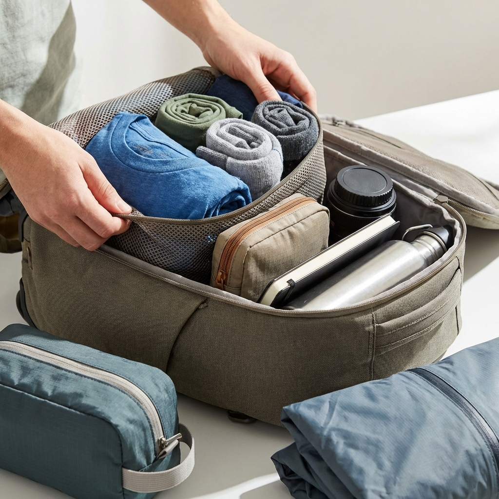

Table of Contents
Pernah nggak sih, kamu merasa terjebak dalam siklus "kerja-pulang-tidur" sampai lupa kapan terakhir kali menghirup udara segar yang bukan berasal dari AC kantor? Kita sering menunda kebahagiaan dengan alasan: "Nanti deh, nunggu cuti panjang," atau "Nanti kalau tabungan liburan udah terkumpul." Padahal, waktu terus berjalan dan energi masa muda kita nggak abadi.
Bayangkan penyesalan yang mungkin muncul lima atau sepuluh tahun lagi. Bukan karena kamu kurang kerja keras, tapi karena kamu melewatkan ribuan momen kecil untuk bahagia hanya karena menunggu satu momen besar yang belum tentu terjadi. Konsep Regret Minimization mengajarkan kita untuk meminimalisir hal-hal yang akan kita sesali di masa depan. Salah satu penyesalan terbesar biasanya adalah kurang menikmati hidup di sela-sela kesibukan. Kabar baiknya, kamu nggak butuh tiket pesawat mahal atau cuti seminggu untuk recharge. Cukup dengan niat, waktu setengah hari, dan satu tas andalan di punggung, petualangan itu ada tepat di depan mata.
"Esensi dari petualangan adalah novelty atau kebaruan. Otak kita butuh penyegaran, bukan sekadar jarak tempuh."
Mengubah Mindset: Petualangan Tidak Harus Jauh
Seringkali kita berpikir bahwa definisi "petualangan" adalah mendaki Rinjani atau snorkeling di Raja Ampat. Padahal, esensi dari petualangan adalah novelty atau kebaruan. Otak kita butuh penyegaran, bukan sekadar jarak tempuh. Di sinilah konsep Micro-Adventure masuk. Ini adalah petualangan singkat, murah, sederhana, tapi efektif banget buat mengembalikan kewarasan mental.
Ibarat rekan kerja yang selalu bisa diandalkan saat deadline mepet, micro-adventure adalah solusi taktis saat kita butuh escape tapi nggak bisa pergi jauh. Di Indonesia, apalagi di kota-kota besar, kita dikelilingi oleh "harta karun" yang sering luput dari pandangan karena kita terlalu sibuk melihat layar HP. Taman kota yang rimbun di pagi hari, kedai kopi tersembunyi di gang sempit yang tenang, atau sekadar jalur trekking ringan di pinggiran kota bisa jadi obat mujarab.
Kuncinya ada pada kesiapan. Sama seperti pramuka, filosofi "selalu siap sedia" itu valid banget buat kaum urban. Di sinilah peran "Teton tas" atau backpack harianmu menjadi krusial. Tas bukan sekadar wadah, tapi dia adalah trigger atau pemicu. Saat tas itu sudah terisi dengan essentials, hambatan psikologis untuk melangkah keluar pintu jadi hilang.
Kenapa Gear yang Tepat Itu Penting (Belajar dari Teton)
Mari bicara soal teknis sedikit, tapi tetap santai. Kenapa sih komunitas Teton sering banget ngomongin soal spesifikasi tas? Apakah cuma buat gaya? Jelas nggak.
Bayangkan kamu mau healing sejenak ke hutan kota, tapi tas yang kamu bawa bikin punggung sakit karena nggak ada padding yang benar, atau resletingnya macet pas kamu mau ambil botol minum. Bukannya rileks, kamu malah jadi emosi. Mood berantakan cuma gara-gara teknis sepele.
Dalam dunia backpacking, kenyamanan adalah raja. Tas Teton, misalnya, sering dipuji karena distribusi beban yang on point. Ini mirip kayak punya asisten pribadi yang tahu persis cara meringankan beban kerjaan kamu tanpa diminta. Kamu nggak sadar dia ada di sana, tapi segala urusan beres.
Fitur yang Mendukung Spontanitas
Untuk micro-adventure, kamu nggak butuh carrier gunung 60 liter. Kamu butuh daypack yang gesit.
- Aksesibilitas: Kantong yang mudah dijangkau. Saat kamu nemu spot bagus buat foto atau duduk santai, kamu bisa ambil kamera atau matras lipat tanpa harus bongkar seisi tas.
- Durabilitas: Kita hidup di iklim tropis. Tas yang tahan banting dan agak water-resistant itu wajib. Nggak lucu kan, lagi asik ngopi di alam terbuka tiba-tiba gerimis dan laptopmu basah?
Seni Packing Ringan untuk Jiwa yang Lelah
Salah satu artikel referensi kita pernah membahas "Packing Light," dan ini relevan banget. Kalau tujuanmu adalah relaksasi, jangan bawa beban hidup—eh maksudnya beban fisik—terlalu banyak. Prinsipnya sederhana: bawa sedikit, alami lebih banyak.
 Packing yang rapi bikin pikiran lebih tenang dan akses barang lebih mudah.Coba deh bongkar tas kerjamu sekarang. Berapa banyak barang yang sebenarnya "sampah" atau nggak pernah dipakai? Struk belanjaan bulan lalu, tiga pulpen mati, atau kabel kusut? Bersihkan itu semua.
Isi Teton tas kamu dengan "Kit Kebahagiaan" versi kamu. Kalau saya pribadi, isinya biasanya simpel:
- Hammock ringan atau kain pantai: Buat gelaran di rumput.
- Buku bacaan atau Kindle: Bukan buku berat soal ekonomi makro ya, tapi fiksi ringan.
- Tumbler air dingin & Snack: Wajib. Lapar memicu amarah.
- Powerbank: Karena kita realistis, kita tetap butuh baterai buat pesan ojek online pulang nanti.
- Jaket tipis/Windbreaker: Pelindung dari angin jahat atau AC mall yang terlalu dingin kalau escape-nya ke indoor.
Rekomendasi Spot "Dekat tapi Terasa Jauh"
Oke, tas udah siap. Sekarang mau ke mana? Berikut adalah pola pikir mencari hidden gems di sekitarmu:
1. Ruang Terbuka Hijau (RTH)
Jangan remehkan taman kota. Datanglah di jam-jam ganjil, misalnya jam 7 pagi di hari Sabtu atau jam 4 sore di hari kerja (kalau bisa pulang tenggo). Cari sudut di bawah pohon. Gelar kain, rebahan, lihat langit. Suara bising kendaraan yang teredam jarak bisa jadi white noise yang menenangkan.
2. Perpustakaan atau Galeri Seni Lokal
Ini adalah definisi relaksasi tanpa keringat. Banyak perpustakaan daerah sekarang sudah direvitalisasi jadi sangat estetik dan hening. Masuk ke sana seperti masuk ke kapsul waktu. Kamu bisa duduk diam, baca buku, tanpa ada bos yang nanya "progres gimana?". Tas Teton-mu yang stylish juga nggak akan terlihat aneh di sini, beda kalau kamu bawa tas gunung besar.
3. Pinggiran Sungai atau Danau Buatan
Di sekitar perumahan besar biasanya ada danau buatan atau retention pond. Seringkali area ini punya jalur jalan kaki yang rapi. Berjalan kaki tanpa tujuan (mindful walking) selama 30 menit sambil memandangi air bisa menurunkan kadar kortisol secara drastis.
Merawat Teman Perjalanan
Sama seperti hubungan asmara, hubungan dengan gear juga perlu dirawat supaya awet. Artikel soal "Maintaining Your Backpack" mengajarkan kita bahwa perawatan preventif itu lebih murah daripada beli baru.
Karena kita pakai tas ini untuk daily driver sekaligus teman kabur sejenak, dia pasti sering kena debu jalanan, keringat punggung, atau remah-remah roti.
- Kebiasaan Simpel: Kosongkan tas setiap habis dipakai. Jangan biarkan ada sisa makanan tertinggal.
- Cuci Ringan: Nggak perlu masuk mesin cuci (ini bisa merusak coating anti-airnya). Cukup lap dengan kain basah hangat dan sedikit sabun bayi kalau ada noda. Angin-anginkan, jangan jemur langsung di bawah matahari terik Indonesia yang ganas, nanti warnanya pudar kayak harapan yang nggak kesampaian.
- Cek Resleting: Ini bagian paling krusial. Kalau mulai seret, kasih sedikit pelumas lilin atau beeswax.
Penutup
Pada akhirnya, tas Teton atau gear apapun yang kamu punya hanyalah alat. Jiwanya ada pada keputusanmu untuk melangkah keluar. Jangan sampai kesibukan membuatmu lupa rasanya menjadi manusia yang bebas, meskipun cuma untuk dua jam di akhir pekan.
Ingatlah teori Regret Minimization yang kita bahas di awal. Di masa tua nanti, kamu nggak akan mengenang seberapa cepat kamu membalas email di hari Minggu. Tapi kamu akan mengenang sore yang tenang di taman kota, buku bagus yang kamu baca di kedai kopi terpencil, dan rasa puas karena berani mengambil jeda di tengah dunia yang terus berlari.
Kemas barangmu, gendong tasmu, dan temukan ketenangan itu. Nggak perlu jauh, yang penting berangkat.
FAQ Relevan
Apakah Teton tas cocok untuk dipakai kerja sekaligus short trip?
Sangat cocok. Desain Teton umumnya hybrid, punya kompartemen laptop yang aman untuk kerja, tapi juga punya kapasitas dan durabilitas material outdoor yang mumpuni untuk short trip atau kegiatan alam ringan.
Bagaimana cara membersihkan tas kanvas/nylon tanpa merusaknya?
Hindari mesin cuci. Gunakan sikat gigi bekas yang lembut, air hangat, dan sabun berbahan mild (seperti sabun bayi). Sikat perlahan searah serat kain, lalu bilas dengan lap basah dan keringkan di tempat teduh berangin.
Berapa ukuran tas (liter) yang pas untuk micro-adventure seharian?
Ukuran 18L hingga 25L adalah sweet spot. Cukup untuk laptop, jaket, botol minum, dan perbekalan ringan, tapi tidak terlalu besar dan merepotkan untuk dibawa masuk ke transportasi umum atau kafe.
Apakah tas Teton tahan hujan deras (waterproof)?
Sebagian besar tas tipe ini bersifat water-resistant (tahan cipratan atau hujan ringan), bukan 100% waterproof. Untuk keamanan maksimal saat hujan deras di Indonesia, disarankan selalu membawa rain cover tambahan.
Apa yang membuat tas ini berbeda dengan tas sekolah biasa?
Perbedaannya ada pada struktur back system (bantalan punggung) dan kekuatan jahitan. Tas tipe adventure didesain untuk menahan beban lebih lama tanpa membuat bahu sakit, serta material yang lebih tahan gesekan dibanding tas sekolah standar.